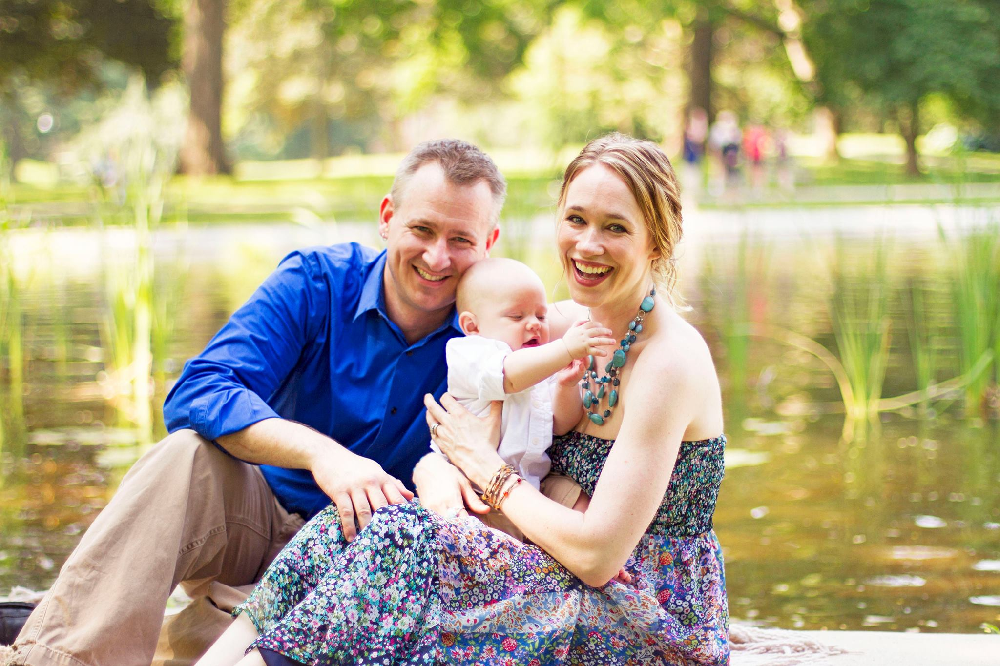
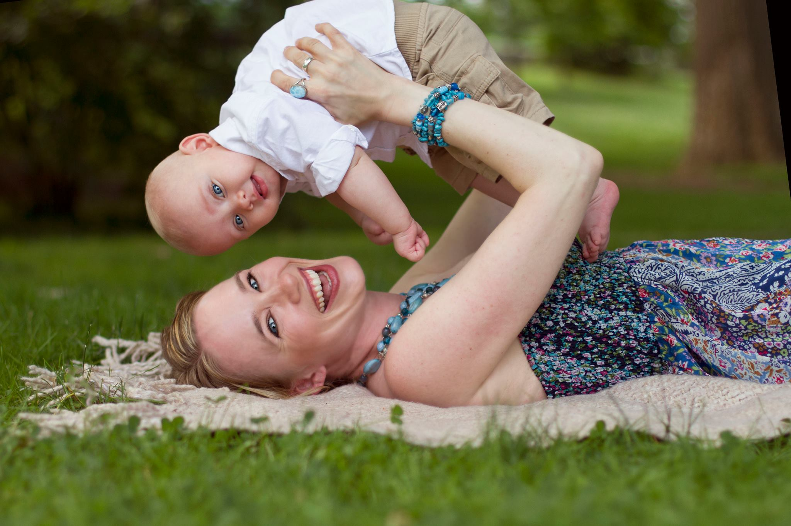

Family
Three is the Magic Number
12 July 2013

This mini-shoot was my last before making the big move to London! It was about 85 degrees at 9AM so we made it very quick, but it still ended up resulting some of my favorite images so far! This little peanut was only 6 months old and I can hardly remember my own being so small–such a good reminder to cherish the little moments because they go by too quickly :) Enjoy everyone!
